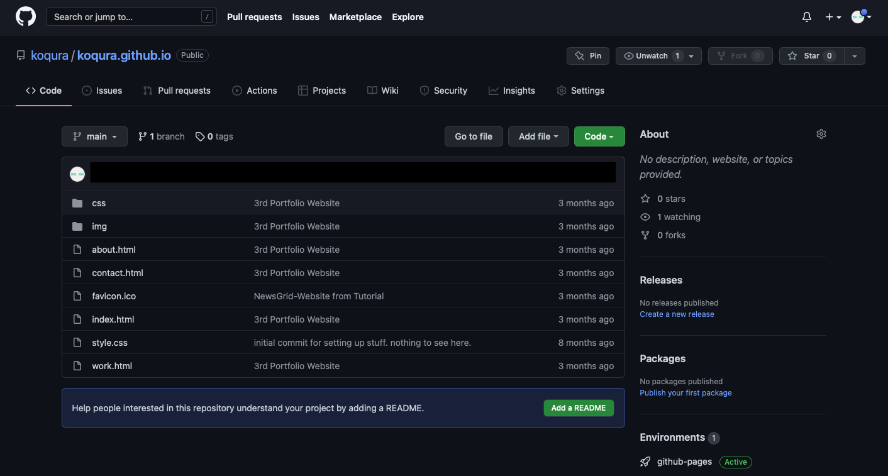

Building a Website
But how do you set up a website? A website from scratch that is. I don't want to resort to website builders. Nothing wrong with them but I want to understand what I'm doing on a fundamental level. I envision the final website very
minimalistic anyway, so how hard can it be writing a few lines of html and finding a hosting service? Let's find out.
There are three steps to this:
- Register a URL with a registrar
- Find a place to host your site
- Write the actual code
When you type a web address into a browser, that address is sent to a DNS-server (Domain Name System) that looks up the address in a list and returns an IP address instead. This translation is necessary as computers on the internet
can only be found via their IP address. The same is true for the web server that will provide the data of the website. Any request thus needs to be directed to the web server that contains the data. If we don't want to type clunky
IP addresses into the browser, which we could, we need the URL like www.google.com to be resolved into the IP address by the DNS first. So Step number one mandates the registrar to register the URL of our website: they inform the
DNS which IP belongs to this URL. Accordingly, step number two chooses a physical location on the internet, the web server with the respective IP-address, where the files of step number three will be dumped into.

There are numerous services that offer URL-registration. Living in Germany, I went with what I deemed a popular and hopefully decent German service. That's no endorsement, I could just as well have picked a different one. Google for
instance also offers domain registration cheap and easy but they don't operate for German customers, apparently. I wanted to keep things quick and easy and kept with Strato. After waaaay too much agonising over the name of the
website, the URL, possible privacy implications and the odd mental barrier, I just went for it.

The next question to decide on seems more relevant though. Hosting your website. I had to decide where to put the files from this site. I researched three possible options:
- commercial hosting service
- self-hosting
- GitHub